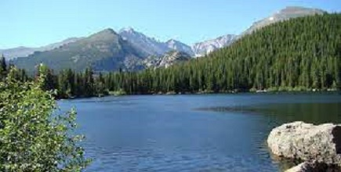

Fish Heaven

Weather Summary
Five Days Forcast
| Monday | Tuesday | Wednesday | Thursday | Friday |
|---|---|---|---|---|
|
|
|
|
|
|
A paradise for residents
It's an undiscovered paradise. Most people who drive by recognize the raw beauty of a place ringed by high desert mountains and bordered by the shores of a vast natural lake, in winter the hills outside this small paradise echo with the sharp whine of snow machines and in the summer thousands of tourists ply the lake's bright blue waters with water skis or fishing poles. It's not technically a city or a town, it's really nothing more than the proverbial wide spot in the road. But people call it a town even though there isn't a city council, just the Bear Lake County Commission that oversees development there.
Fish Haven, originally named Rush Creek, is an unincorporated community along the shores of Bear Lake in Bear Lake County, Idaho, United States. It is 4 km north of the Utah border. A post office called Fish Haven was established in 1867, and remained in operation until 1962, the town was so named because nearby Bear Lake is a favorite fishing spot. So if you feel like you need a place mixed with nature and the nice calm of a beatiful town then Fish Heaven is the right place for you.